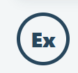

EX
Lommeguide for eksplosjonsfarlige områder

Lommeguide for eksplosjonsfarlige områder
Skriv inn merkingen, ta bilde eller velg et bilde fra telefonen.
Velg system for manuell tolkning. Ved bilde/skanning prøver appen å oppdage systemet automatisk.
Tekstlesingen kjører lokalt i nettleseren. Kontroller alltid OCR-teksten før merkingen tolkes.
Kontroller alltid OCR-teksten og faglig forklaring mot godkjent materiale før bruk.
Utvalgte kurs med direkte lenke til Trainor.
Se flere EX- og andre Trainor-kurs her ↗